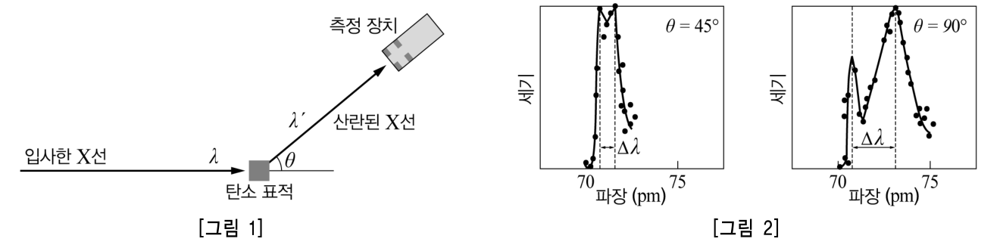
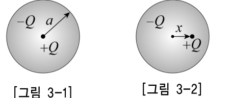
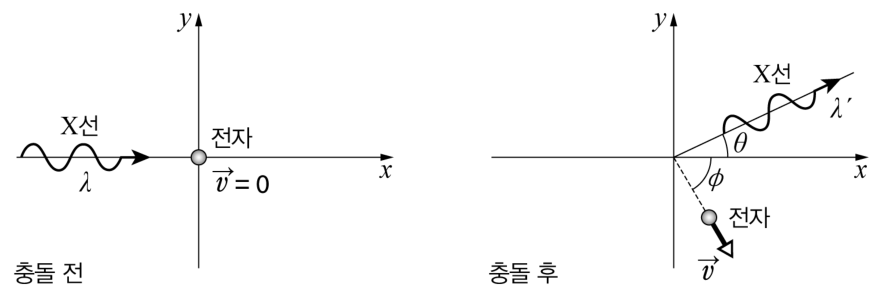

콤프턴 산란 — 톰슨 원자 모형의 진동, 강제 진동, 하늘이 파란 이유, 콤프턴 공식, 라카토스·쿤의 관점Compton scattering · Thomson-model oscillator, driven oscillation, Rayleigh scattering, Compton formula, Lakatos and Kuhn
다음은 콤프턴 산란에 대해 토론하고 있는 학생들의 대화 내용이다. 【30점】
영희: 빛의 이중성에 대한 과학사는 참 재미있어.
철수: 영과 프레넬 등의 빛의 간섭과 회절에 관한 연구 이후 맥스웰이 고전 전자기학을 완성하면서 대부분의 과학자들이 빛을 파동이라고 생각했지. 그런데 1905년에 아인슈타인이 광전 효과 실험을 해석하면서 빛이 입자라는 주장을 했어.
영희: 20세기 초반에 빛의 파동설과 입자설에 관한 많은 논란이 있었는데, 이와 관련하여 콤프턴이 중요한 실험을 했다면서?
철수: 맞아. 1923년에 콤프턴은 [그림 1]과 같은 실험 장치를 이용하여 X선을 탄소 표적에 쏘아 여러 각도로 산란된 X선의 파장과 세기를 측정했어. 그는 [그림 2]와 같이 입사한 X선의 파장 \(\lambda\)와 이보다 긴 파장 \(\lambda'\)에서 X선의 세기가 극대가 되고, \(\Delta\lambda=\lambda'-\lambda\)가 산란각에 따라 달라진다는 것을 발견했지.

영희: 그런데 그게 빛의 파동설과 입자설에 관한 논란과 어떤 관련이 있지?
철수: 빛을 파동으로 보는 고전물리학으로는 설명할 수 없는 현상이었기 때문이지. 고전물리학에 의하면 X선은 전자기파이기 때문에 X선의 진동하는 전기장이 탄소 원자 안의 전자를 진동시키는데, 이때 전자의 진동에 의해 방출되는 전자기파의 진동수는 X선의 진동수와 같거든.
영희: 그래? 그럼 하나씩 알아보자. 우선 어떻게 탄소 원자의 전자가 진동할 수 있지?
철수: 콤프턴 당시의 원자모형은 아니지만, 이렇게 생각하면 도움이 될 거야. 탄소 원자를 [그림 3-1]과 같이 반지름이 \(a\)인 공 모양의 균일한 전자 구름이 점으로 된 전하량 \(+Q\)의 원자핵을 둘러싸고 있는 것으로 단순화하기로 해. 이제 [그림 3-2]와 같이 어떤 이유로 원자핵과 전자구름의 중심이 약간 어긋나면 서로 어떤 힘을 미치는지 알아볼까?
(가) 우선 전자구름의 중심으로부터 \(x\)만큼 떨어진 곳의 전기장을 구해보자. ……
따라서 전자구름과 원자핵 사이에 작용하는 힘의 크기는 \(x\)에 비례하고 방향은 변위의 반대방향이므로 단진동이 일어나게 되지.
영희: 그러면 그 진동수는 X선의 진동수와 다를 수도 있지 않을까?
철수: 그렇지. 하지만 전자기파에 의해 전자가 운동하는 것은 역학 시간에 배운 강제진동과 같아. 변위에 비례하는 복원력과 속도에 비례하는 저항력, 그리고 주기적인 힘 \(F_0\sin\omega t\)를 받아 움직이는 물체의 운동방정식은 \(m\dfrac{d^2x}{dt^2}+b\dfrac{dx}{dt}+kx=F_0\sin\omega t\)가 되는데
(나) 이 방정식을 풀어서 알아보자. ……
영희: 그러니까 진동자가 자신의 고유 진동수에 관계없이 외부 힘의 진동수로 진동하는 거네. 그런데 전자가 진동하면 왜 전자기파가 나오는 거지?
철수: 가속되는 전하는 전자기파를 방출하기 때문이지. 전자가 진동하면 원자는 진동하는 전기쌍극자처럼 행동하게 돼. 이때 각진동수 \(\omega\)로 진동하는 전기쌍극자로부터 \(\vec r\)만큼 떨어진 곳에 도달하는 전자기파 세기의 평균은 \(\left(\dfrac{\mu_0p_0^2\omega^4}{32\pi^2c}\right)\dfrac{\sin^2\varphi}{r^2}\)가 돼. 여기에서 \(\varphi\)는 전기쌍극자 모멘트의 방향과 \(\vec r\)이 이루는 각이고, \(p_0\)는 전기쌍극자 모멘트의 크기, \(\mu_0\)는 진공에서의 투자율, \(c\)는 빛의 속도야. 이 식을 이용하면 맑은 날 하늘이 파랗게 보이는 것도 설명할 수 있어.
영희: 흔히들 ‘하늘이 파랗게 보이는 것은 공기에 의한 빛의 산란 때문’이라고 하는데, 내가 조금 더 설명해 볼게.
(다) 그 산란의 물리적 의미는 …… 그리고 하늘이 파랗게 보이는 것은 ……
철수: 그러니까 빛을 전자기파로 취급해도 원자나 분자에 의한 빛의 산란을 설명할 수 있는 거야. 하지만 그것만으로는 [그림 2]와 같은 실험 결과를 설명할 수 없었지.
영희: 그러면 콤프턴은 자신의 실험을 어떻게 해석했지?
철수: 콤프턴은 아인슈타인의 광자 개념을 도입했어. 이에 의하면 파장이 \(\lambda\)인 광자의 에너지는 \(E=hc/\lambda\), 운동량은 \(p=h/\lambda\)지. 이것은 질량이 \(m\)인 입자의 에너지–운동량 관계식 \(E^2=(pc)^2+(mc^2)^2\)과도 잘 맞아. 광자는 질량이 0인 입자이기 때문이지.
(라) [그림 4]와 같이 파장이 \(\lambda\)인 광자가 정지해 있는 전자와 충돌하면 어떻게 되는지 알아보자. ……
이러한 결과로부터 콤프턴은 입사시킨 X선보다 긴 파장의 X선이 나올 수 있다는 것뿐만 아니라, 산란각 \(\theta\)와 \(\Delta\lambda\)의 관계까지도 설명할 수 있었어. 이후로도 여러 실험 결과들이 발표되었지만 결과적으로 빛의 이중성은 양자역학을 통해 새롭게 해석되었지.
2-1. 대화의 (가)~(라) 완성 [20점]


이 대화에서 (가)~(라)에 들어갈 내용을 적절한 수식이나 물리 개념 등을 사용하여 완성하시오.
(가) 전자구름의 중심으로부터 \(x\)만큼 떨어진 곳의 전기장을 구하고, 원자핵이 받는 힘이 \(x\)에 비례하는 복원력임을 보이시오.
(나) 운동방정식 \(m\ddot x+b\dot x+kx=F_0\sin\omega t\)를 풀어, 충분한 시간이 지난 뒤 진동자가 외부 힘의 진동수로 진동함을 보이시오.
(다) 공기에 의한 빛의 산란의 물리적 의미와, 쌍극자 복사 세기 식을 이용하여 맑은 날 하늘이 파랗게 보이는 까닭을 설명하시오.
(라) [그림 4]와 같이 파장 \(\lambda\)인 광자가 정지한 전자(질량 \(m\))와 충돌하여 \(\theta\) 방향으로 파장 \(\lambda'\)인 광자가 산란될 때 \(\Delta\lambda=\lambda'-\lambda\)와 \(\theta\)의 관계를 유도하시오.
2-2. 과학철학으로 해석 [10점]
이 대화 내용을 참고로 콤프턴 산란이 물리학의 변화에 미친 영향을 라카토스(I. Lakatos)의 연구프로그램과 쿤(T. Kuhn)의 과학 혁명 관점에서 각각 설명하시오.
라카토스의 연구프로그램 관점에서 콤프턴 산란이 물리학의 변화에 미친 영향을 설명하시오.
쿤의 과학 혁명 관점에서 콤프턴 산란이 물리학의 변화에 미친 영향을 설명하시오.
(가)의 모형에서 전자 하나(\(Q=e\), 질량 \(m_e\)), \(a=0.1\) nm일 때 고유 진동수에 해당하는 파장 \(\lambda_0=2\pi c/\omega_0\)을 추정하고, 가시광선 산란이 ‘\(\omega\ll\omega_0\)’ 조건에 해당함을 확인하시오.
[그림 2]에서 입사 파장 \(\lambda\) 그대로인 봉우리가 남아 있는 까닭을 설명하시오.
정답모범 답안 요약
| 문항 | 모범 답안 (요약) | 검증 |
|---|---|---|
| (가) | \(\vec E(x)=-\dfrac{Q}{4\pi\varepsilon_0a^3}\vec x\) (\(x\lt a\)), 원자핵이 받는 힘 \(\vec F=-k\vec x\), \(k=\dfrac{Q^2}{4\pi\varepsilon_0a^3}\) → 단진동, \(\omega_0=\sqrt{k/m}\) | 공식 정답 미공개 — 가우스 법칙 표준 유도. 확장 1에서 ω₀ 수치 추정 |
| (나) | \(x(t)=Ce^{-bt/2m}\cos(\omega_1t+\phi)+A\sin(\omega t-\delta)\) → 정상 상태 \(x=A\sin(\omega t-\delta)\), \(A=\dfrac{F_0}{\sqrt{m^2(\omega_0^2-\omega^2)^2+b^2\omega^2}}\), \(\tan\delta=\dfrac{b\omega}{m(\omega_0^2-\omega^2)}\): 외력의 진동수 \(\omega\)로 진동 | 모의실험(톰슨 모형 진동 모드): RK4 정상 상태 진폭 = 공식 |
| (다) | 산란: 입사 빛의 전기장이 분자 속 전자를 강제 진동시켜 생긴 진동 전기쌍극자가 같은 진동수의 전자기파를 사방(\(\sin^2\varphi\))으로 재복사하는 것. \(\omega\ll\omega_0\)이면 \(p_0\approx qF_0/m\omega_0^2\)가 일정하므로 산란 세기 \(\propto\omega^4\propto\lambda^{-4}\) — 파란빛이 빨간빛보다 약 6배 더 산란되어 하늘이 파랗게 보인다. | 모의실험(산란 세기 모드): ω⁴A(ω)² 곡선과 청/적 비 |
| (라) | 에너지·운동량 보존에서 \(\Delta\lambda=\lambda'-\lambda=\dfrac{h}{mc}(1-\cos\theta)\) (\(h/mc=2.43\) pm). 산란각이 클수록 \(\Delta\lambda\)가 커지며, 45°에서 0.71 pm, 90°에서 2.43 pm로 [그림 2]와 일치 | 모의실험(콤프턴 모드): 보존식을 수치로 풀어 얻은 λ′ = 공식 |
| 라카토스 | 고전 파동 연구프로그램은 콤프턴 효과 앞에서 보호대만 수정하는 퇴행적 프로그램이 되었고, 광자 연구프로그램은 Δλ(θ)·되튐 전자 등 새로운 사실을 예측·입증하는 진보적 프로그램이 되어 점진적으로 교체되었다. | 공식 정답 미공개 — 과학철학 표준 해석 |
| 쿤 | 고전 전자기 패러다임의 정상 과학에서 콤프턴 효과는 해결되지 않는 변칙 사례였고, 광전 효과·흑체 복사와 함께 위기를 일으켜 광자·양자역학이라는 새 패러다임으로의 과학 혁명(패러다임 전환, 공약 불가능)이 일어났다. | 공식 정답 미공개 — 과학철학 표준 해석 |
| 확장 1 확장 | \(\lambda_0\approx120\) nm(자외선) — 가시광선은 \(\omega\ll\omega_0\) | 모의실험 표에 수치 |
| 확장 2 확장 | 원자 전체가 되튀는 산란 → \(\Delta\lambda=h/Mc\approx0\) | 질량 비 계산 |
1소문항별 풀이 (AI 모범 답안)
(가)2-1. 대화의 (가)~(라) 완성 [20점] 5점
(가) 전자구름의 중심으로부터 \(x\)만큼 떨어진 곳의 전기장을 구하고, 원자핵이 받는 힘이 \(x\)에 비례하는 복원력임을 보이시오.
1가우스 법칙
전자구름의 전하 밀도 \(\rho=-\dfrac{Q}{\frac43\pi a^3}\). 반지름 \(x\lt a\)인 구면: \(\oint\vec E\cdot d\vec A=E\cdot4\pi x^2=\dfrac{\rho\cdot\frac43\pi x^3}{\varepsilon_0}=-\dfrac{Qx^3}{\varepsilon_0a^3}\) → \(\vec E=-\dfrac{Q}{4\pi\varepsilon_0a^3}\vec x\) (중심을 향함).
2복원력
원자핵이 받는 힘 \(\vec F=Q\vec E=-\dfrac{Q^2}{4\pi\varepsilon_0a^3}\vec x\equiv-k\vec x\). 전자구름은 반대 힘을 받는다(작용·반작용). 원자핵이 무거우므로 전자구름(질량 \(m\))이 각진동수 \(\omega_0=\sqrt{\dfrac{Q^2}{4\pi\varepsilon_0a^3m}}\)로 단진동한다.
점전하처럼 \(E\propto1/x^2\)을 쓰는 실수, 가우스 면 안의 전하를 전체 \(-Q\)로 쓰는 실수.
(나)2-1. 대화의 (가)~(라) 완성 [20점] 5점
(나) 운동방정식 \(m\ddot x+b\dot x+kx=F_0\sin\omega t\)를 풀어, 충분한 시간이 지난 뒤 진동자가 외부 힘의 진동수로 진동함을 보이시오.
1동차해
\(m\ddot x+b\dot x+kx=0\)의 해 \(x_h=Ce^{-bt/2m}\cos(\omega_1t+\phi)\), \(\omega_1=\sqrt{\omega_0^2-b^2/4m^2}\) — 시간이 지나면 0으로 감쇠(과도 진동).
2특수해
복소수 \(x=\tilde Ae^{i\omega t}\)로 \(F_0e^{i\omega t}\)에 대해: \(\tilde A=\dfrac{F_0/m}{\omega_0^2-\omega^2+ib\omega/m}\). 허수부를 취하면
\[x_p=A\sin(\omega t-\delta),\quad A=\frac{F_0}{\sqrt{m^2(\omega_0^2-\omega^2)^2+b^2\omega^2}},\quad\tan\delta=\frac{b\omega}{m(\omega_0^2-\omega^2)}\]따라서 정상 상태에서 진동자는 고유 진동수 \(\omega_0\)가 아니라 외력의 진동수 \(\omega\)로 진동한다(진폭·위상만 \(\omega_0\)에 의존).
정상 상태 진동수를 \(\omega_0\) 또는 \(\omega_1\)로 쓰는 실수, 위상 지연 δ를 빠뜨리는 경우.
(다)2-1. 대화의 (가)~(라) 완성 [20점] 5점
(다) 공기에 의한 빛의 산란의 물리적 의미와, 쌍극자 복사 세기 식을 이용하여 맑은 날 하늘이 파랗게 보이는 까닭을 설명하시오.
1물리적 의미
빛의 진동 전기장 \(E_0\sin\omega t\)가 공기 분자의 전자(구름)를 강제 진동시키면 분자는 \(p=qx\)인 진동 쌍극자가 되어, 같은 진동수 \(\omega\)의 전자기파를 \(\sin^2\varphi\) 분포로 사방에 다시 방출한다. 즉 산란은 빛 에너지를 흡수–재방출하여 진행 방향만 바꾸는 과정이며 파장은 변하지 않는다(탄성 산란).
2하늘이 파란 이유
공기 분자의 고유 진동수 \(\omega_0\)는 자외선 영역이고 가시광선은 \(\omega\ll\omega_0\) → \(A\approx\dfrac{F_0}{m\omega_0^2}\), \(p_0=qA\)는 \(\omega\)에 거의 무관. 따라서 산란 세기 \(\propto p_0^2\omega^4\propto\dfrac{1}{\lambda^4}\)(레일리 산란). 파란빛(450 nm)은 빨간빛(700 nm)보다 \((700/450)^4\approx5.9\)배 강하게 산란되므로, 태양 방향이 아닌 하늘에서 오는 산란광은 파란색이 우세하다. (보라색이 덜 보이는 까닭: 햇빛 스펙트럼에 보라가 적고 눈의 감도가 낮다. 해 질 녘에는 긴 경로에서 파란빛이 산란되어 빠져나가 붉게 보인다.)
‘파란빛이 공기에 흡수된다’, ‘먼지에 반사된다’는 설명. 세기가 ω⁴에 비례하는 조건(ω ≪ ω₀, p₀ 일정)을 빠뜨리는 경우.
(라)2-1. 대화의 (가)~(라) 완성 [20점] 5점
(라) [그림 4]와 같이 파장 \(\lambda\)인 광자가 정지한 전자(질량 \(m\))와 충돌하여 \(\theta\) 방향으로 파장 \(\lambda'\)인 광자가 산란될 때 \(\Delta\lambda=\lambda'-\lambda\)와 \(\theta\)의 관계를 유도하시오.
1보존 법칙
에너지: \(\dfrac{hc}{\lambda}+mc^2=\dfrac{hc}{\lambda'}+E_e\), \(E_e^2=p_e^2c^2+m^2c^4\).
운동량: \(\dfrac h\lambda=\dfrac h{\lambda'}\cos\theta+p_e\cos\phi\), \(0=\dfrac h{\lambda'}\sin\theta-p_e\sin\phi\).
2φ 소거와 정리
운동량 식을 제곱해 더하면 \(p_e^2=p^2+p'^2-2pp'\cos\theta\) (\(p=h/\lambda\), \(p'=h/\lambda'\)). 에너지 식에서 \(E_e=(p-p')c+mc^2\)을 제곱: \(p_e^2c^2+m^2c^4=(p-p')^2c^2+2(p-p')mc^3+m^2c^4\).
두 식에서 \(-2pp'\cos\theta=-2pp'+2(p-p')mc\) → \(\dfrac{1}{p'}-\dfrac1p=\dfrac{1-\cos\theta}{mc}\) → \(\lambda'-\lambda=\dfrac{h}{mc}(1-\cos\theta)\).
\(h/mc=2.43\) pm: \(\theta=45^\circ\)에서 0.71 pm, \(90^\circ\)에서 2.43 pm — [그림 2]의 \(\Delta\lambda\)와 일치. 파장이 변하지 않는 봉우리는 원자에 강하게 묶인 전자(사실상 원자 전체 질량 \(M\))에 의한 산란(\(h/Mc\approx0\)).
전자 에너지를 비상대론적 \(p^2/2m\)으로 쓰거나, 운동량을 스칼라로 보존시키는 실수.
라카토스2-2. 과학철학으로 해석 [10점] 5점
라카토스의 연구프로그램 관점에서 콤프턴 산란이 물리학의 변화에 미친 영향을 설명하시오.
1해석
· 고전 전자기 연구프로그램: 견고한 핵 = 맥스웰 방정식, 빛 = 전자기파. 콤프턴 결과(진동수 변화)는 변칙 사례 — 보호대(보조 가설: 도플러 효과, 산란 전자의 운동 등)를 수정해 방어하지만 새로운 사실을 예측하지 못함 → 퇴행적.
· 광자 연구프로그램(아인슈타인–콤프턴): 견고한 핵 = \(E=hf\), \(p=h/\lambda\), 보존 법칙. \(\Delta\lambda=\frac h{mc}(1-\cos\theta)\)와 되튐 전자의 존재·방향(보테–가이거, 콤프턴–사이먼 동시 계수 실험)을 예측하고 확인 → 이론적·경험적으로 진보적.
· 라카토스에 따르면 한 번의 반증으로 이론이 버려지는 것이 아니라, 진보적 프로그램이 퇴행적 프로그램을 점진적으로 대체한다 → 콤프턴 산란은 광자 연구프로그램이 우위를 차지하는 결정적 계기가 되었다.
‘콤프턴 실험이 파동설을 반증했다’(소박한 반증주의)로만 쓰는 경우 — 라카토스는 연구프로그램 단위의 경쟁과 대체를 강조한다.
쿤2-2. 과학철학으로 해석 [10점] 5점
쿤의 과학 혁명 관점에서 콤프턴 산란이 물리학의 변화에 미친 영향을 설명하시오.
1해석
· 정상 과학: 맥스웰 전자기학 패러다임에서 빛은 파동 — 산란은 같은 진동수의 재복사((다))로 설명되는 ‘퍼즐 풀이’.
· 변칙 사례: 콤프턴의 \(\lambda'\gt \lambda\)는 패러다임 안에서 해결되지 않는 변칙, 흑체 복사·광전 효과와 함께 누적 → 위기.
· 과학 혁명: 광자 개념과 이후의 양자역학이라는 새 패러다임으로 전환(빛의 이중성의 새로운 해석). 두 패러다임은 ‘빛’, ‘산란’의 의미가 달라 공약 불가능하며, 전환은 논리적 증명만이 아니라 과학자 공동체의 게슈탈트 전환으로 일어난다. 이후 양자역학을 바탕으로 한 새로운 정상 과학이 시작되었다.
라카토스와 쿤의 용어를 섞어 쓰는 경우(예: 쿤 관점에서 ‘진보적 연구프로그램’).
확장 12-2. 과학철학으로 해석 [10점]
(가)의 모형에서 전자 하나(\(Q=e\), 질량 \(m_e\)), \(a=0.1\) nm일 때 고유 진동수에 해당하는 파장 \(\lambda_0=2\pi c/\omega_0\)을 추정하고, 가시광선 산란이 ‘\(\omega\ll\omega_0\)’ 조건에 해당함을 확인하시오.
1계산
\(\omega_0^2=\dfrac{(8.99\times10^9)(1.60\times10^{-19})^2}{(9.11\times10^{-31})(10^{-10})^3}=2.5\times10^{32}\) → \(\omega_0=1.6\times10^{16}\) rad/s, \(\lambda_0=2\pi c/\omega_0\approx1.2\times10^{-7}\) m = 120 nm. 가시광선 \(\omega\)는 \(\omega_0\)의 1/3~1/6 → \(A\approx F_0/m\omega_0^2\) 근사 성립(정확히는 \(1/(\omega_0^2-\omega^2)\) 보정으로 파란빛 산란이 조금 더 커진다).
확장 22-2. 과학철학으로 해석 [10점]
[그림 2]에서 입사 파장 \(\lambda\) 그대로인 봉우리가 남아 있는 까닭을 설명하시오.
1해석
탄소의 내각 전자는 결합 에너지가 커서 X선 광자가 전자만 떼어 내지 못하면 원자 전체(\(M=12\,u\))가 되튄다. \(h/Mc\approx1.1\times10^{-16}\) m로 무시 가능 → 파장 변화 없는 레일리(톰슨) 산란 봉우리.
2채점 기준 (예시)
공식 채점 기준은 공개되지 않는다. 배점과 답안 요소를 바탕으로 만든 예시 채점 기준이다.
| 문항 | 배점 | 채점 요소 (예시 답안의 핵심 표현) |
|---|---|---|
| (가) | 3 | 가우스 법칙으로 내부 전기장 \(E\propto x\) 도출 |
| (가) | 2 | 힘 \(F=-kx\), \(k=Q^2/4\pi\varepsilon_0a^3\) (복원력) |
| (나) | 2 | 과도해(감쇠)와 정상 상태 해 구분 |
| (나) | 2 | 진폭 A·위상 δ 유도 |
| (나) | 1 | 외력 진동수 ω로 진동한다는 결론 |
| (다) | 2 | 산란 = 유도 쌍극자의 재복사(같은 진동수) |
| (다) | 2 | ω ≪ ω₀ → p₀ 일정 → 세기 ∝ ω⁴(λ⁻⁴) |
| (다) | 1 | 파란빛이 더 산란되어 하늘이 파랗게 보임 |
| (라) | 2 | 에너지·운동량 보존식(상대론적 전자 에너지) |
| (라) | 2 | φ 소거와 정리 과정 |
| (라) | 1 | \(\Delta\lambda=\frac{h}{mc}(1-\cos\theta)\) 결과 |
| 라카토스 | 2 | 견고한 핵·보호대 등 연구프로그램 개념 사용 |
| 라카토스 | 3 | 고전 프로그램의 퇴행 / 광자 프로그램의 진보(새로운 사실 예측) |
| 쿤 | 3 | 정상 과학–변칙–위기–혁명 단계 사용 |
| 쿤 | 2 | 콤프턴 효과를 변칙 사례·패러다임 전환과 연결 |
| 합계 30점 | ||
3출제 의도·검토
출제 의도
- 고전적 산란(가우스 법칙 → 단진동 → 강제 진동 → 쌍극자 복사)과 양자적 산란(광자–전자 충돌)을 하나의 이야기로 연결하고, 그 이론 변화를 과학철학으로 해석하는 종합 논술.
검토 의견
43D 모의실험 — 콤프턴 산란과 고전적 산란 (Space 재생/정지 · R 처음으로 · F 전체화면)
5고등학생 지도 — 고교 교육과정과 잇기
고교 교육과정과의 연결
- 물리학Ⅰ ‘빛의 입자성’: 광자의 운동량 p = h/λ와 콤프턴 산란(정성적)
- 통합과학·지구과학 ‘하늘이 파란 이유, 노을’ — 레일리 산란
- 과학사 읽기: 빛의 본성 논쟁(뉴턴–호이겐스–영–맥스웰–아인슈타인–콤프턴)
고등학생용 변형 문항
- 산란각 90°에서 파장이 2.4 pm 길어졌다. 광자 에너지는 늘었는가, 줄었는가? 그 에너지는 어디로 갔는가?
- 해 질 녘 하늘이 붉은 까닭을 ‘파란빛이 더 잘 산란된다’로 설명하시오.
6수업 활용 안내
수업 흐름 (50분)
- 도입 (5분) — 하늘이 파란 이유 질문 — 고전 설명
- 고전 모형 (15분) — (가) 가우스 법칙 → (나) 강제 진동 → (다) 쌍극자 복사
- 콤프턴 유도 (15분) — (라) 보존식 → Δλ, 그림 2 수치 비교
- 과학철학 토론 (10분) — 라카토스 vs 쿤 관점 비교표
- 정리 (5분) — 모의실험 세 모드 요약
자주 나오는 오개념
- “산란되면 파장이 늘 바뀐다” → 고전 산란은 같은 진동수
- “파란빛은 공기에 흡수된다” → 산란되어 사방으로 퍼진다
- “전자 운동 에너지는 p²/2m” → X선 콤프턴에서는 상대론 식 사용
- “콤프턴 실험 한 번으로 파동설이 폐기” → 연구프로그램·패러다임의 점진적/혁명적 전환
평가 포인트
- 가우스 법칙으로 내부 전기장을 구하는가
- 정상 상태와 과도 상태를 구분하는가
- ω⁴ 법칙의 조건을 아는가
- 보존 법칙으로 Δλ를 유도하는가
- 두 과학철학의 개념을 구별해 쓰는가
더 나아가기
콤프턴–사이먼 동시 계수 실험(되튐 전자와 산란 광자가 동시에 나옴)이 왜 광자 프로그램의 ‘새로운 사실 예측’에 해당하는지 조사·발표한다.